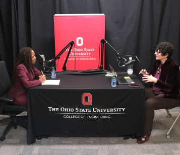

Dr. Tanya Berger-Wolf appears on The Ohio State University's Enginuity Podcast, Episode 14.
Hosted by Dean Ayanna Howard of The Ohio State University, College of Engineering, Dr. Berger-Wolf recently sat down on Enginuity podcast to describe the work of Imageomics researchers, scientists, and students. Enginuity explores stories of innovation (and ingenuity) within The Ohio State University College of Engineering. The podcast introduces faculty and that are pushing boundaries and developing game-changing technologies.
Listen to this short, 18-minute podcast as Dr. Berger-Wolf discusses the new field of Imageomics, forming at the intersection of computer science, wildlife biology and social sciences: "With a $15 million grant from the National Science Foundation, Professor Tanya Berger-Wolf, director of the Translational Data Analytics Institute, is working with a team of researchers, scientists and students to leverage AI to lead a movement in wildlife conservation." Listen to full episode here.